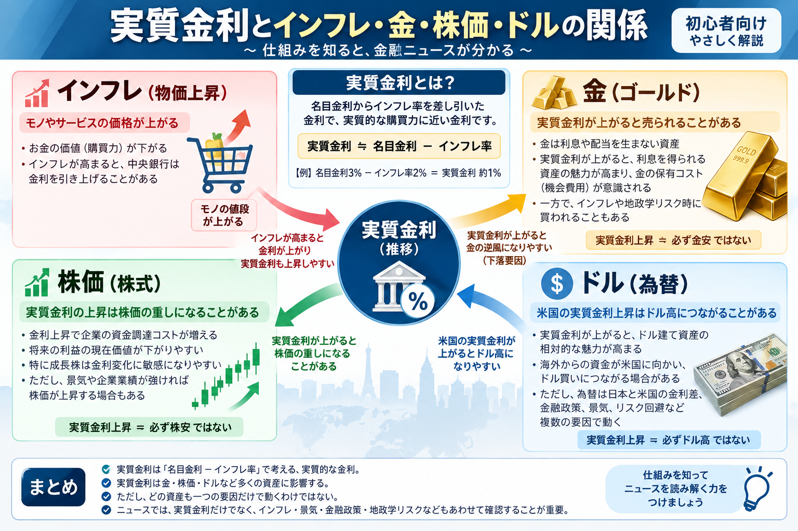

話題・トレンド
実質金利とは？なぜ金や株価に影響するの？初心者向けに解説
金融ニュースでは「米国の実質金利が上昇したため金が売られた」 「実質金利の低下が株価を支えた」といった表現がよく登場します。 実質金利とは、単に銀行や国債に表示される金利ではなく、 インフレによるお金の価値の変化まで考慮した金利です。 金（ゴールド）、株式、ドルなど多くの資産価格を理解するうえで重要な考え方です。
Overview
金利が上がったのに、なぜ金や株価まで動くの？
金利は預金や住宅ローンだけに関係するものではありません。 金融市場では、金利が変わると債券の魅力、企業の資金調達コスト、 株式の評価、通貨の魅力なども変わります。 そのため、金利の変化は金・株式・為替など多くの市場へ波及します。

- 金利を見るときは「名目金利」と「実質金利」を分けて考えます。
- 実質金利はインフレによる購買力の変化まで考慮します。
- 金は利息を生まないため、実質金利との関係が特に注目されます。
- 株価やドルも金利変化の影響を受けますが、必ず一方向に動くわけではありません。
Definition
実質金利とは？
実質金利とは、金利から物価上昇による影響を考慮した金利です。 初心者向けには、次の式で考えると分かりやすくなります。
基本式
実質金利 ≒ 名目金利 − インフレ率
例えば、名目金利が3％で、物価が年間2％上昇している場合、 単純化すると実質金利はおおむね1％と考えることができます。
名目金利
銀行預金や国債などで表示される、物価変動を考慮する前の金利です。
インフレ率
商品やサービスの価格が、一定期間でどの程度上昇したかを示す割合です。
実質金利
インフレによる購買力低下を考慮した、実質的な金利の考え方です。
注意： 「実質金利 ≒ 名目金利 − インフレ率」は初心者向けに単純化した式です。 厳密な計算方法や、金融市場で使われる実質金利は、 将来の物価上昇をどのように見込むかによって異なる場合があります。
Nominal vs Real
名目金利と実質金利の違い
名目金利だけを見ていると、「金利が高いからお金の価値も増えている」と考えやすくなります。 しかし、同時に物価が上昇していれば、実際に買える商品やサービスの量はそれほど増えていない場合があります。
例1
名目金利3％・インフレ率2％
簡略的には、 3％ − 2％ ＝ 実質金利約1％ と考えます。 金利収入は得られていても、物価も上昇しているため、 購買力の増加は名目金利3％より小さくなります。
例2
名目金利2％・インフレ率3％
簡略的には、 2％ − 3％ ＝ 実質金利約マイナス1％ です。 金利を受け取っていても、それ以上に物価が上がれば、 お金の購買力は低下する可能性があります。
初心者向けポイント
「金利が何％あるか」だけでなく「物価が何％上がっているか」も見る
金融市場では、金利の高さそのものだけでなく、 インフレを差し引いた後にどれだけの利回りが残るかが重要になります。 これが実質金利を見る理由です。
物価の動きを確認する代表的な指標には CPI（消費者物価指数）、 PCEデフレーター、 PPI（生産者物価指数） などがあります。
Gold
なぜ実質金利が上がると金が売られることがあるの？
実質金利と特に関係が深い資産として注目されるのが金（ゴールド）です。 理由は、金そのものは利息や配当を生まないからです。
-
実質金利が上昇する
債券など、利息を得られる資産の実質的な魅力が高まりやすくなります。 -
金を持つ機会費用が高くなる
金を持っている間は、利息を受け取ることができません。 -
資金が利息を得られる資産へ向かう場合がある
投資家が金よりも債券などを選ぶ動きが強まることがあります。 -
金価格の下押し材料になる場合がある
金への需要が相対的に弱まり、価格が下落することがあります。
実質金利が上昇
金には逆風になりやすい
利息を得られる資産の魅力が高まり、 利息を生まない金を保有する機会費用が大きくなりやすいためです。
実質金利が低下
金には追い風になりやすい
債券などから得られる実質的な利回りが低下すると、 金を保有する機会費用が小さくなり、金の相対的な魅力が高まる場合があります。
実質金利が上がれば、必ず金が下がるわけではありません。 金価格はドル相場、地政学リスク、中央銀行の金購入、 投資家のリスク回避、需給など複数の材料で動きます。 実質金利は重要な要因の一つとして考える必要があります。
金そのものの特徴やインフレ・ドルとの関係については、 「金（ゴールド）とは？なぜインフレや金利で価格が動くの？」 でも詳しく解説しています。
Stocks
実質金利と株価にはどんな関係がある？
実質金利の変化は株価にも影響します。 主な理由は、企業の資金調達コストと、将来の利益を現在の価値に置き換えるときの考え方です。
借入コストが上がる
金利が上昇すると、企業が銀行から借りたり社債を発行したりするときの負担が増える場合があります。 利払いが増えれば利益を圧迫する要因になります。
将来利益の評価が低くなりやすい
金利が高くなると、将来受け取る利益よりも、 今すぐ得られる利回りの価値が相対的に高くなります。 そのため株式の評価が下がる場合があります。
債券との比較が起きる
安全性が比較的高い国債でも高い利回りが得られるようになると、 株式へ投資するために求められるリターンも高くなりやすくなります。
成長株が金利変化に敏感になりやすい理由
将来の大きな成長を期待されている企業は、 現在の利益よりも「数年後にどれだけ利益を生み出すか」が株価評価で重視される場合があります。 実質金利が上昇すると、遠い将来の利益の現在価値が低く評価されやすくなるため、 成長期待の大きい企業ほど金利上昇の影響を強く受けることがあります。
ただし
実質金利上昇＝株価下落ではない
金利が上昇していても、景気が強く企業利益が大きく伸びていれば、 株価が上昇する場合があります。 株価は金利だけでなく、企業業績、景気、為替、投資家心理など複数の要因で動きます。
Dollar & FX
実質金利とドル・為替の関係
米国の実質金利は、ドル相場を見るうえでも注目されます。 実質金利が上昇すると、米国の国債などドル建て資産から得られる実質的な利回りが高くなり、 海外投資家から見たドル建て資産の魅力が高まる場合があります。
-
米国の実質金利が上昇する
米国の債券などから得られる実質的な利回りが高くなります。 -
ドル建て資産の魅力が高まる
より高い利回りを求める資金が米国市場へ向かう場合があります。 -
ドル買いにつながる場合がある
米国資産へ投資するためにドルを購入する動きが強まることがあります。
為替は実質金利だけでは決まりません。 ドル円の場合は、日本と米国の金利差、FRBと日銀の金融政策、 景気見通し、貿易、リスク回避、投資家のポジションなど多くの要因が影響します。 実質金利はその中の一つの材料です。
中央銀行の金融政策についてニュースを見る際は、 「タカ派・ハト派とは？」 もあわせて確認すると、金利予想と為替のつながりを理解しやすくなります。
TIPS
ニュースで見る「米10年実質金利」とTIPSとは？
金融ニュースでは「米10年実質金利」という言葉が登場することがあります。 このとき参考にされる代表的な指標が、 米国の物価連動国債（TIPS：Treasury Inflation-Protected Securities）の利回りです。
TIPSとは
インフレに合わせて元本が調整される米国債
TIPSは米国財務省が発行する物価連動国債です。 物価の変化を反映する仕組みを持っており、 その利回りは市場で実質金利を見るための代表的な指標として利用されます。
米10年実質金利
10年TIPS利回りが参考にされる
金価格や米国株のニュースでは、 10年物TIPSの利回りが「米10年実質金利」として紹介されることがあります。 この利回りが上昇したか、低下したかが市場で注目されます。
「実際のインフレ率」と「期待インフレ率」は違う
初心者向けの説明では、 「名目金利 − 実際のインフレ率」で実質金利を考えることがあります。 一方、金融市場では将来の物価上昇を織り込んだ 期待インフレ率が重要になります。
初心者向けの簡略式
名目金利 − 実際のインフレ率
過去や現在の購買力の変化をイメージしやすくするための単純化した説明です。
市場で重視される考え方
名目金利 − 期待インフレ率
投資家は将来のインフレを予想しながら資産価格を決めるため、 市場では期待インフレ率が重要になります。
国債と利回りの基本的な仕組みについては 「国債とは？」、 債券市場全体の動きについては 「債券市場とは？」 で解説しています。
Market Context
2026年9月時点でも金利と金価格が注目される理由
2026年9月の金融市場では、原油価格上昇によるインフレ懸念や、 米国をはじめとする長期金利の上昇が注目されています。 一方で地政学的な不安から、安全資産として金が買われる場面も見られています。
2026年9月9日の市場では、中東情勢の緊迫化と原油価格上昇を背景に インフレ懸念が強まり、米国債利回りが高い水準で推移する一方、 金は安全資産需要から上昇する場面が報じられました。 このように、金利上昇が金の逆風になり得る局面でも、 地政学リスクなど別の材料が強ければ金価格が上昇する場合があります。
ここから分かること
- 実質金利は金価格を見る重要材料の一つです。
- しかし、地政学リスクやドル、中央銀行の需要など他の材料も同時に動きます。
- 一つの理論だけで短期的な相場を説明しきることはできません。
- ニュースでは「何が上がったか」だけでなく「なぜ動いたか」を確認することが重要です。
How To Read News
初心者が実質金利のニュースを見るときのポイント
「実質金利が上がった」というニュースを見たら、 数字だけで投資判断をするのではなく、その背景を順番に確認すると理解しやすくなります。
-
名目金利が動いたのか確認する
米10年国債利回りなど、通常の国債利回りが上昇したのかを確認します。 -
インフレ予想が動いたのか確認する
CPIやPCE、原油価格などによって市場のインフレ見通しが変化していないかを見ます。 -
実質金利の方向を見る
TIPS利回りなどを使い、実質金利が上昇しているのか低下しているのかを確認します。 -
金・株価・ドルの反応を見る
実質金利の変化に対して、それぞれの市場がどのように反応しているかを確認します。 -
別の材料がないか確認する
地政学リスク、企業業績、中央銀行の発言、雇用統計など、 金利以外の材料が市場を動かしていないか確認します。
米10年実質金利
上昇しているか、低下しているかを確認します。
期待インフレ率
市場が将来の物価上昇をどう見ているか確認します。
FRBの政策予想
利上げ・利下げ予想が変化していないか確認します。
米国の景気や金利予想を動かす代表的な材料としては、 米国雇用統計 も重要です。
Caution
初心者が注意したいこと
実質金利だけで予測しない
金、株、為替は複数の材料で動きます。 一つの指標だけで上昇・下落を断定しないことが大切です。
名目金利とインフレを分ける
金利上昇だけでなく、同時にインフレ期待がどう動いたのか確認します。
金には別の要因もある
ドル、地政学リスク、中央銀行の金需要なども価格へ影響します。
株価は業績も重要
金利が高くても企業利益が成長すれば、株価が上昇する場合があります。
為替は金利差だけではない
金融政策、景気、リスク回避、資金フローなど多くの要因が影響します。
短期ニュースだけで判断しない
一日の金利や価格変動だけを見て、急いで投資判断をする必要はありません。
Related Articles
実質金利とあわせて読みたい関連記事
物価、国債、中央銀行、金の順に確認すると、 実質金利のニュースをより理解しやすくなります。
FAQ
実質金利に関するよくある質問
-
実質金利とは？
実質金利は、名目金利から物価上昇の影響を考慮した金利です。 初心者向けには「実質金利 ≒ 名目金利 − インフレ率」と考えると理解しやすくなります。 -
名目金利と実質金利の違いは？
名目金利は表示されている金利そのものです。 実質金利は、そこからインフレによる購買力の変化を考慮した金利です。 名目金利が高くても、それ以上に物価が上昇していれば実質金利は低くなる場合があります。 -
実質金利が上がるとなぜ金価格が下がることがあるの？
金は利息を生まないためです。 実質金利が上昇すると債券など利息を得られる資産の魅力が高まり、 金を保有する機会費用が意識されやすくなります。 ただし、必ず金価格が下落するわけではありません。 -
実質金利が上がると株価は下がる？
実質金利の上昇は企業の借入コストや株式評価の重しになる場合があります。 ただし、景気や企業業績が強ければ株価が上昇する場合もあります。 金利だけで株価の方向は決まりません。 -
実質金利とドルにはどんな関係がある？
米国の実質金利が上昇すると、 ドル建て資産の相対的な魅力が高まり、ドル買いにつながる場合があります。 ただし為替は日米金利差、金融政策、景気、リスク回避など複数の要因で動きます。 -
米10年実質金利とは？
米国の10年程度の期間における実質的な金利水準を示す指標です。 金融市場では10年物の物価連動国債（TIPS）の利回りが、 米10年実質金利の参考として広く確認されています。 -
初心者は実質金利のニュースをどう見ればいい？
実質金利が上昇したか低下したかだけでなく、 名目金利、期待インフレ率、FRBの金融政策予想、 金・株価・ドルの反応を合わせて確認することが大切です。
Summary
まとめ｜実質金利は金・株価・ドルを理解する重要な指標
- 実質金利は、名目金利からインフレの影響を考慮した金利です。
- 初心者向けには「実質金利 ≒ 名目金利 − インフレ率」と考えると理解しやすくなります。
- 名目金利が高くても、物価上昇率がそれ以上なら購買力は増えにくくなります。
- 金は利息を生まないため、実質金利上昇が逆風になる場合があります。
- 実質金利の上昇は企業の資金調達コストや株式評価にも影響します。
- 米国の実質金利上昇はドル建て資産の魅力を高め、ドル買いにつながる場合があります。
- 市場ではTIPS利回りが実質金利を見る代表的な指標として利用されます。
- 金・株価・為替は複数の要因で動くため、実質金利だけで方向を断定しないことが重要です。
Review
一般ユーザー目線の体験でおすすめの会社をご紹介

ご利用にあたっての注意事項
本記事は一般的な情報提供と金融教育を目的としており、 特定の株式、債券、金、ETF、投資信託、通貨その他の金融商品の購入・売却を推奨するものではありません。 金融商品には価格変動、金利変動、為替変動、信用、流動性などのリスクがあり、 損失が生じる場合があります。 投資を行う際は最新の公式情報、商品説明書、目論見書、契約締結前交付書面などを確認し、 ご自身の判断と責任で行ってください。